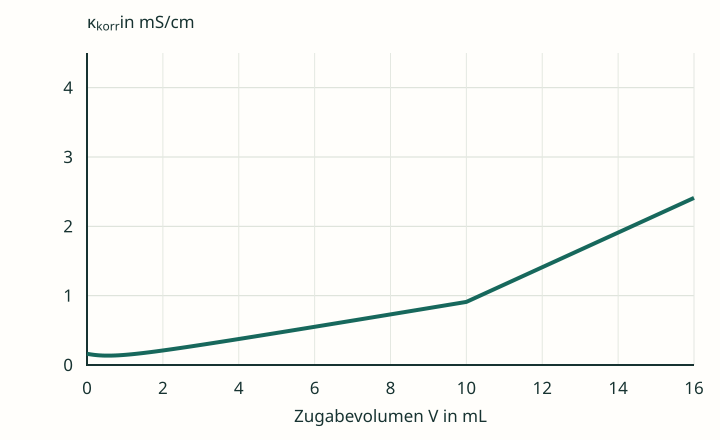
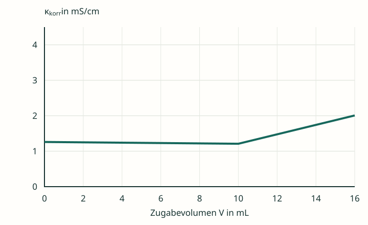
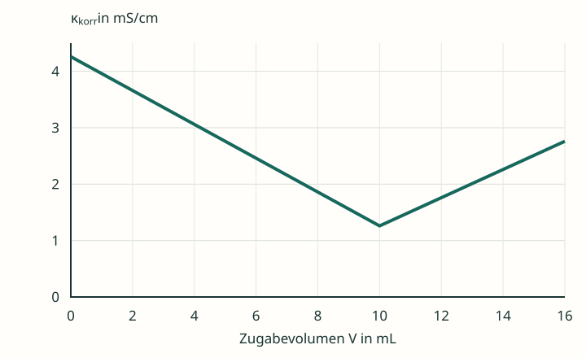

Drei Kurven zuordnen
Die folgenden Modellkurven gehören in unbekannter Reihenfolge zu HCl/NaOH, CH₃COOH/NaOH und NaCl/AgNO₃. Jede Probe enthält 1,00 mmol des zu bestimmenden Stoffes in 100,0 mL; jede zugegebene Lösung hat c = 0,100 mol/L.
Alle drei Grafiken verwenden dieselben Achsenskalierungen. Die Leitfähigkeit ist volumenkorrigiert; reine Proben ohne weitere Salzzusätze und konstante Ionenbeweglichkeiten sind vorausgesetzt. Die Bilder sind didaktische Rechenmodelle, keine Messdaten.






Zuordnen und begründen
- Ordne jede Kurve einer der drei Titrationen zu. Begründe anhand des Teilchenbestands, nicht allein mit einer gemerkten Form.
- Markiere in jeder Grafik das ungefähre Äquivalenzvolumen. Formuliere eine Definition des Äquivalenzpunkts, die für alle drei Titrationen gilt.
- Nenne die wesentlichen gelösten Ionen am ÄP jeder Titration.
- Erkläre, warum die Äquivalenzvolumina hier übereinstimmen, die Leitfähigkeitswerte am ÄP aber verschieden sind.
Hilfe 1 · Reaktion zuerst
Nutze für jede Titration ihre Ionengleichung. Welche Stoffmenge der zugegebenen Lösung entspricht 1,00 mmol des gesuchten Stoffes?
Hilfe 2 · Kurvenform erklären
Überlege: Wo werden besonders bewegliche H₃O⁺-Ionen durch Na⁺ ersetzt? Wo wird ein ungeladener Säurevorrat in eine Salzlösung überführt? Wo werden Cl⁻-Ionen durch ähnlich leitfähige NO₃⁻-Ionen ersetzt?
Fünf Aussagen auf dem Prüfstand
Entscheide jeweils, ob die Aussage stimmt. Korrigiere falsche Aussagen so, dass sie auch bei den anderen Titrationen tragfähig sind.
- „Der Äquivalenzpunkt ist immer der tiefste Punkt einer Leitfähigkeitskurve.“
- „Am Äquivalenzpunkt gibt es keine frei beweglichen Ionen mehr.“
- „Äquivalenzpunkt bedeutet pH = 7.“
- „Schwache Säuren brauchen bei gleicher Säuremenge weniger OH⁻ als starke einprotonige Säuren.“
- „Der Schnitt geeigneter annähernd linearer Kurvenbereiche kann zur Bestimmung des Äquivalenzvolumens dienen.“
Hilfe · Ein Gegenbeispiel genügt
Prüfe die ersten vier Aussagen besonders an der Essigsäuretitration. Trenne die Definition über das Stoffmengenverhältnis vom Leitfähigkeitssignal und vom pH-Wert.
Musterlösungen
Kurvenzuordnung und gemeinsamer Äquivalenzpunkt
| Kurve | Titration | Wesentliche Ionen am ÄP |
|---|---|---|
| A | CH₃COOH mit NaOH: längerer flacher Anstieg, danach steiler. | Na⁺, CH₃COO⁻ |
| B | NaCl mit AgNO₃: geringer Rückgang, danach deutlicher Anstieg. | Na⁺, NO₃⁻ |
| C | HCl mit NaOH: starker Rückgang, danach Anstieg. | Na⁺, Cl⁻ |
Bei allen drei Reaktionen gilt das Verhältnis 1 : 1. Daher liegen die Äquivalenzvolumina bei 10,0 mL: 0,100 mol/L · 0,0100 L = 1,00 mmol.
Allgemeine Definition: Am Äquivalenzpunkt ist genau die Stoffmenge des Reaktionspartners zugesetzt worden, die nach der Reaktionsgleichung zum stöchiometrischen Umsatz des ursprünglich zu bestimmenden Stoffes benötigt wird.
Die Leitfähigkeit am ÄP hängt dagegen von den verbleibenden Ionensorten, deren Konzentrationen und Beweglichkeiten ab. Hier sind Na⁺ und die jeweilige Anionensorte mengenmäßig vergleichbar, die Beweglichkeiten von Acetat, Nitrat und Chlorid unterscheiden sich jedoch.
In den realen Lösungen bleiben kleine Beiträge aus Säure-Base- beziehungsweise Löslichkeitsgleichgewichten. Die Tabelle benennt die wesentlichen Ionen und behauptet keine mathematische Abwesenheit aller anderen.
Die fünf Aussagen beurteilen
- Falsch. Bei Essigsäure ist der ÄP ein Wechsel zwischen zwei ansteigenden Bereichen. Ein möglicher kleiner früher Tiefpunkt ist kein ÄP. Bei HCl liegt im idealisierten Modell ein Minimum am ÄP.
- Falsch. In diesen drei Fällen bleiben gelöste Gegenionen zurück. Deshalb liegt die Leitfähigkeit am ÄP oberhalb von null.
- Falsch. Bei HCl/NaOH beträgt der pH am ÄP unter idealen Bedingungen bei 25 °C etwa 7. Bei CH₃COOH/NaOH ist er wegen der Acetathydrolyse größer als 7. Eine Fällungstitration wird überhaupt nicht durch einen bestimmten pH definiert.
- Falsch. Die gleiche Stoffmenge einer einprotonigen Säure verbraucht die gleiche stöchiometrische OH⁻-Menge. Der zunächst unprotolysierte Anteil einer schwachen Säure wird ebenfalls titriert.
- Richtig, mit passenden Bereichen. Man verwendet geeignete annähernd lineare Abschnitte vor und nach dem Übergang. Gekrümmte Anfangs- und Übergangsbereiche sowie Messstreuung müssen bei der Auswahl beachtet werden. Mehr dazu in 4.3 und 4.4.
Zurück zur Checkliste
Kannst du den Äquivalenzpunkt über die Stöchiometrie erklären und ihn in unterschiedlichen Leitfähigkeitskurven erkennen, ohne automatisch nach einem Minimum zu suchen?
Fachliche Quellen und Modellgrenzen
- Tel Aviv University: Conductometric Titrations, Tabelle 1 – Grenzleitfähigkeiten bei 25 °C, insbesondere zum Vergleich von Chlorid, Nitrat und Acetat. Die Grafiken verwenden bewusst gerundete Modellbeiträge.
- IUPAC Gold Book: Equivalence-point – Definition über das Stoffmengenverhältnis.
- IUPAC Gold Book: Conductometric titration – Auswertung über den Schnitt linearer Kurvenbereiche.
- OpenStax, Chemistry 2e, 14.7: Acid-Base Titrations – Stöchiometrie und pH am Äquivalenzpunkt.
- Journal of Chemical Education (2010): Conductimetric Titrations: A Predict–Observe–Explain Activity for General Chemistry – Leitfähigkeitsverläufe starker und schwacher Säuren, einschließlich eines kleinen Anfangsabfalls bei Essigsäure.
Eigenständig entwickelte Lerntexte, Aufgaben, Musterlösungen und Grafiken. Die Modelle entsprechen den Seiten 3.2, 3.4 und 3.5. Alle Vergleichsachsen sind identisch. Die Fällung und die starke Säure werden stöchiometrisch idealisiert; beim Essigsäuremodell wird das Gleichgewicht einbezogen. Die Kurvenhöhe ist kein Maß für die gesamte titrierbare Stoffmenge.